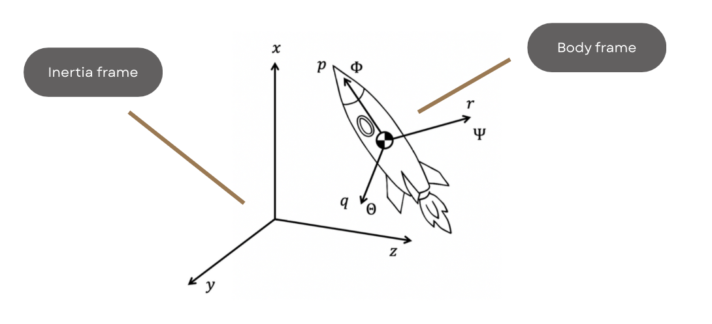
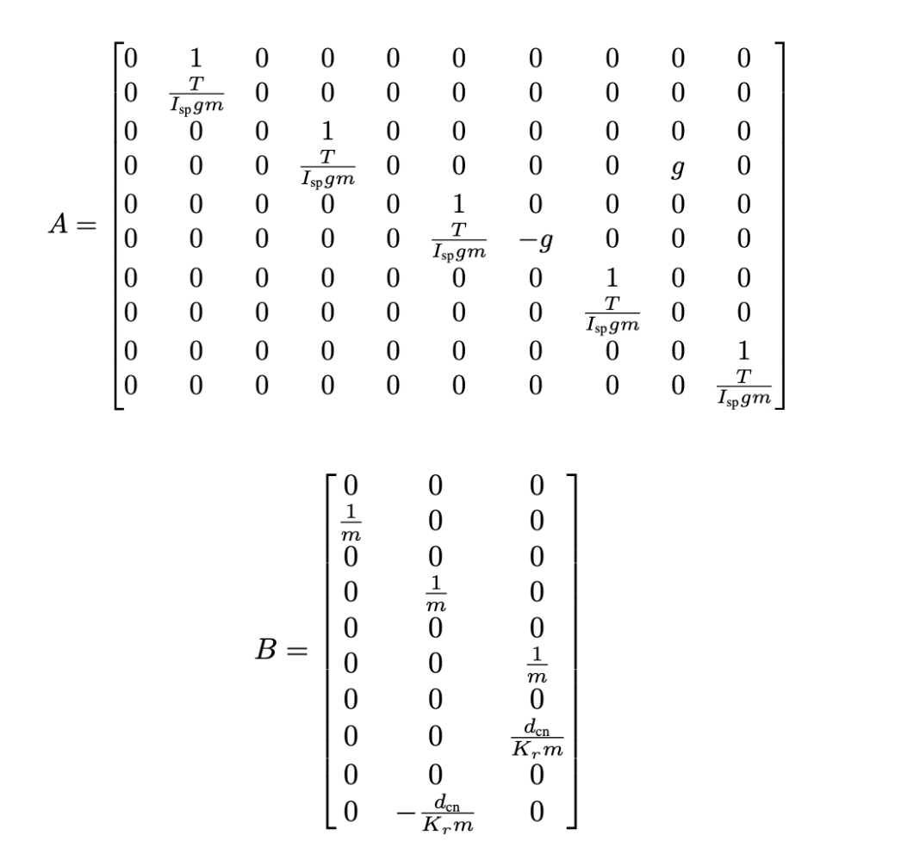
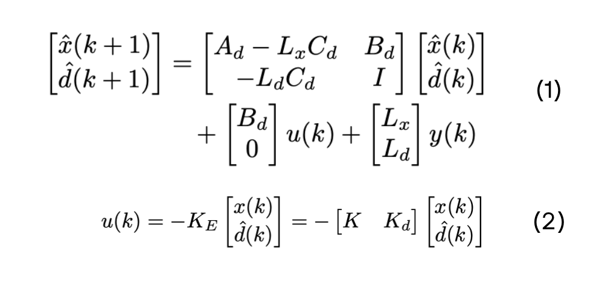
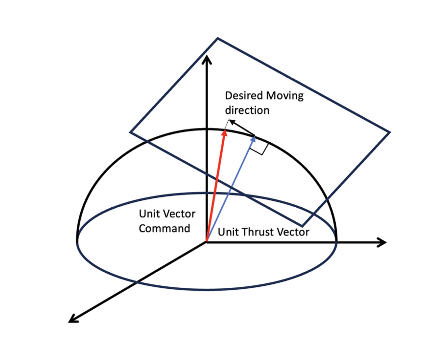
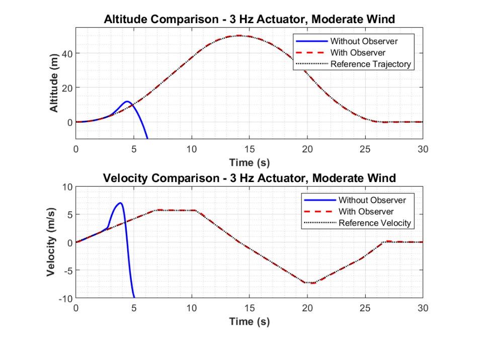
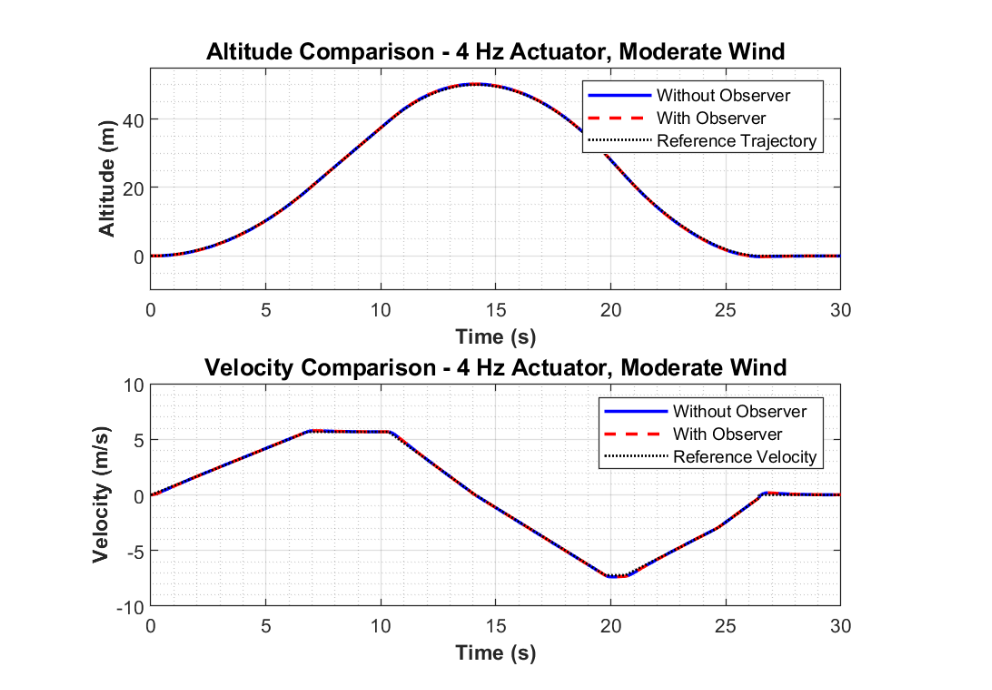
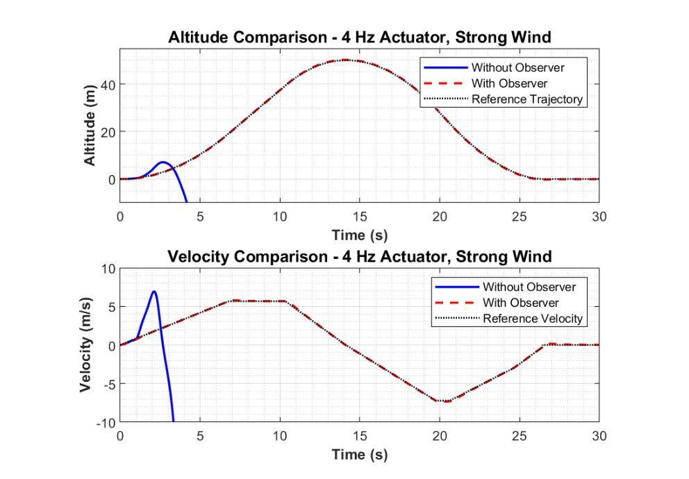

5DOF SELF‑LANDING ROCKET
Gain‑Scheduled LQR with Disturbance Observer • Dynamics

OVERVIEW
- Built a 5DOF vertical landing simulator (roll excluded from control) with time‑varying mass & inertia, wind, and actuator limits.
- Controller: gain‑scheduled LQR (table over mass & thrust) + disturbance observer (DOB) for lateral disturbance rejection.
- Actuator/TVC modeling: 2nd‑order low‑pass dynamics and geometric projection of the thrust vector onto a feasible actuation surface.
- Reference profile: 8‑phase ascent/descent to reach 50 m and achieve a soft, accurate landing within constraints.
- Outcome: DOB notably improves robustness; succeeds where baseline LQR fails under strong wind with limited bandwidth.
MISSION SPECS
| Altitude Goal | Landing Zone | Touchdown Speed | Fuel Limit | Thrust Window | Sample Time |
|---|---|---|---|---|---|
| 50 m | ≤ 10 m diameter | ≤ 0.3 m/s | ≤ 40 kg | 1100–2500 N | 0.01 s |
TRAJECTORY & REFERENCE DESIGN
| Ascent | |
|---|---|
| Ascent velocity | vasc = 5.67 m/s |
| Ascent acceleration | aacc = 0.83 m/s2 |
| Ascent deceleration | adec = 1.50 m/s2 |
| Descent | |
| Initial descent velocity | vd1 = 7.22 m/s |
| Final descent velocity before landing | vd2 = 3.00 m/s |
| Descent acceleration | aacc,d = 1.28 m/s2 |
| First descent deceleration | adec1,d = 1.06 m/s2 |
| Final descent deceleration | adec2,d = 1.50 m/s2 |
| Cruise distances in descent | |
| Distance during cruise phase 1 | d5 = 6.25 m |
| Distance during cruise phase 2 | d7 = 0.00 m |
| Landing conditions | |
| Landing speed | 0.300 m/s |
| Total flight time | 26.43 s |
| Total fuel used | 39.84 kg |
The algorithm iteratively evaluates combinations of these parameters to identify feasible profiles that satisfy critical constraints: reaching the target altitude of 50 meters, maintaining acceptable thrust and fuel limits, and achieving a final landing speed below 0.3 m/s.
GAIN‑SCHEDULED DLQR
- A 5DOF model was linearized around hover, and control gains were pre‑computed over a grid of mass (50–200 kg) × thrust (0.1–2500 N).
- During flight, real‑time bilinear interpolation selects the appropriate feedback gain K(m, T).
- The weighting matrices Q/R were tuned to balance vertical stability, landing accuracy, and fuel efficiency.

DISTURBANCE OBSERVER (DOB)
- An augmented state observer estimates external lateral disturbances (d̂), which are canceled via feed‑forward compensation (see Eqs. (1)).
- Observer gains are selected by pole placement on the augmented model. The discrete dynamics use a first‑order approximation: Ad ≈ I + AΔt, Bd ≈ BΔt.
- The overall control law integrates the DOB: (see Eqs. (2)), where Kd emphasizes lateral disturbance rejection.

ACTUATOR & TVC MODELING

- TVC bandwidth tested at 3 Hz and 4 Hz using a 2nd‑order low‑pass filter.
- Desired thrust vector projected onto a tangent plane of a hemispherical constraint to simulate actuator feasibility.
- Roll injected as a 0.25 rad, 1 rad/s oscillation to emulate imperfect roll control.
- Rotating wind field at 0.2 Hz; Specific impulse 130 s; g=9.81 m/s²; dcn=0.67 m.
RESULTS
Summary Table
| Scenario | Fuel (kg) | RMSE y (m) | RMSE z (m) | Max y‑z (m) | Landing v (m/s) |
|---|---|---|---|---|---|
| 3 Hz, moderate wind | N/A | N/A | N/A | N/A | N/A |
| 3 Hz, moderate (DOB) | 27.56 | 0.13 | 0.06 | 0.22 | -0.31 |
| 4 Hz, moderate wind | 27.56 | 0.11 | 0.07 | 0.19 | -0.31 |
| 4 Hz, moderate (DOB) | 27.56 | 0.13 | 0.06 | 0.22 | -0.31 |
| 4 Hz, strong wind | N/A | N/A | N/A | N/A | N/A |
| 4 Hz, strong (DOB) | 27.67 | 0.99 | 0.43 | 1.64 | -0.38 |
Figures



SUMMARY & NEXT
- Gain‑scheduled LQR + DOB improves landing robustness under wind and actuator limits; meets mission constraints.
- Next: use field wind data; HIL or real‑time implementation; consider splitting controllers to cut compute cost.
- Design and add the roll control systemto the rocket for complete 6 Dof rocket control.
ACKNOWLEDGMENT
This work was conducted as part of my contributions in our club. Learn more about the club here: Club Page.